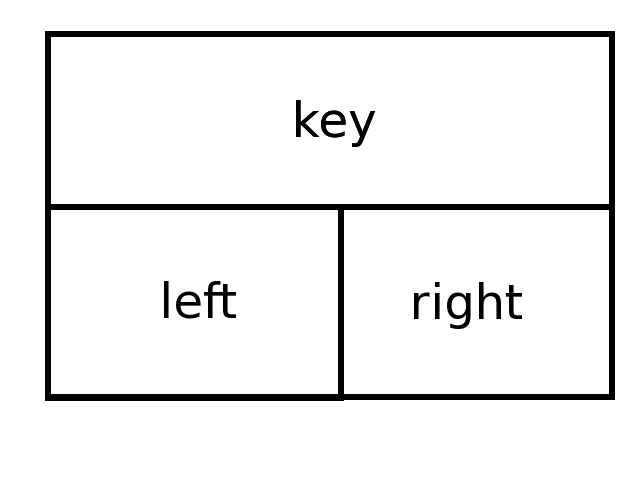
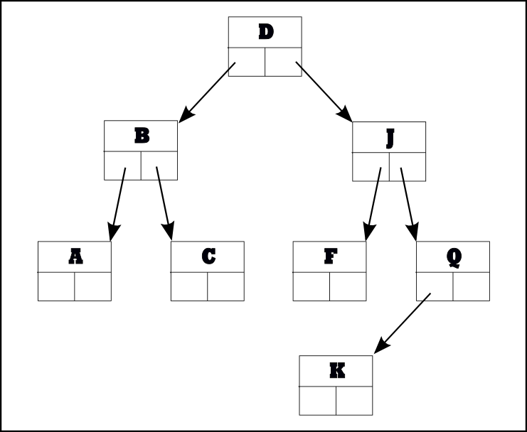

Hi and welcome back! Let's get right to it then, shall we?
In this lesson we'll cover:
- Extending Functionality by Inheritance
- More Complex Delegation
- Extending Functionality by Composition
- Recursive Composition
In Python, it's unusual to come across deep inheritance trees (E inherits from D which inherits from C which inherits from B which inherits from A). While such program structures are possible, they can become unwieldy quickly. If you want to implement a dict-like object with some additional properties, you could choose to inherit from dict and extend the behavior, or you could decide to compose your own object from scratch and make use of a dict internally to provide the desired dict-like properties.
Let's say that you want to make your program keep count of how many items have been added (that is, how many times a previously non-existent key was bound in the table. If the key already exists, it isn't an addition—it's a replacement). With inheritance, you'd do it like this:
>>> class Dict(dict):
... def __init__(self, *args, **kw):
... dict.__init__(self, *args, **kw)
... self.adds = 0
... def __setitem__(self, key, value):
... if key not in self:
... self.adds += 1
... dict.__setitem__(self, key, value)
...
>>> d = Dict(a=1, b=2)
>>> print("Adds:", d.adds)
Adds: 0
>>> d["newkey"] = "add"
>>> print("Adds:", d.adds)
Adds: 1
>>> d["newkey"] = "replace"
>>> print("Adds:", d.adds)
Adds: 1
>>>
This code does behaves as we'd expect. Albeit limited, it provides functionality over and above that of dict objects.
class Dict(dict):
def __init__(self, *args, **kw):
self.adds = 0
dict.__init__(self, *args, **kw)
def __setitem__(self, key, value):
if key not in self:
self.adds += 1
dict.__setitem__(self, key, value)
Our Dict class inherits from the dict built-in. Because this Dict class needs to perform some initialization, it has to make sure that the dict object initializes properly. The dict accomplishes this with an explicit call to the parent object (dict) with the arguments that were provided to the initializing call to the class. dict.__init__(self, *args, **kw) passes all the positional and keyword arguments that the caller passes, beginning with providing the current instance as an explicit first argument (remember, the automatic provision of the instance argument only happens when a method is called on an instance—this method is being called on the superclass). Because the dict type can be called with many different arguments, it is necessary to adopt this style, so that this dict can be used just like a regular dict. We might say that the Dict object delegates most of its initialization to its superclass. Similarly, the only difference between the __setitem__() method and a pure dict appears when testing to determine whether the key already exists in the dict, and if not, incrementing the "add" count. The remainder of the method is implemented by calling dict's superclass (the standard dict) to perform the normal item assignment, by calling its __setitem__() method with the same arguments: dict.__setitem__(self, key, value).
The initializer function does not call the __setitem__() method to add any initial elements—the adds attribute still has the value zero immediately after creation, despite the fact that the instance was created with two items.
| Note | We didn't do it here, but if you are going to deliver code to paying customers, or if you expect the code to see heavy use, you'll want to run tests that verify it operates correctly. Writing tests can be difficult, but when something is going into production, it's important to have a bank of tests available. That way, if anyone refactors your code, they can do so with a reasonable degree of confidence that if the tests still pass, they haven't broken anything. |
The Dict class inherits from dict. This is appropriate because most of the behavior you want is standard dict behavior. Since both the __init__() and __setitem__() methods of Dict call the equivalent methods of dict as a part of their code, we say that those methods extend the corresponding dict methods.
In general, the more of a particular object's behaviors you need, the more likely you are to inherit from it. But if only a small part of the behavior you require is provided by an existing class, you might choose to create an instance of that class and bind it to an instance variable of your own class instead. The approach is similar, but does not use inheritance. Let's take a look at that:
>>> class MyDict:
... def __init__(self, *args, **kwargs):
... self._d = dict(*args, **kwargs)
... def __setitem__(self, key, value):
... return self._d.__setitem__(key, value)
... def __getitem__(self, key):
... return self._d.__getitem__(key)
... def __delitem__(self, key):
... return self._d.__delitem__(key)
...
>>> dd = MyDict(wynken=1, blynken=2)
>>> dd['blynken']
2
>>> dd['nod'] -->
Traceback (most recent call last):
File "<stdin>", line 1, in <module>
dd['nod']
~~^^^^^^^
File "<stdin>", line 7, in __getitem__
return self._d.__getitem__(key)
~~~~~~~~~~~~~~~~~~~^^^^^
KeyError: 'nod'
>>> dd['nod'] = 3
>>> dd['nod']
3
>>> del dd['nod']
>>> dd.keys()
Traceback (most recent call last):
File "<stdin>", line 1, in <module>
AttributeError: 'MyDict' object has no attribute 'keys'
>>>
| Modern Python | The KeyError traceback above reflects current Python (3.14), which adds
caret annotation lines pointing to the exact expression that failed. The original course traceback
omitted those lines. |
Here the MyDict class creates a dict in its __init__() method and binds it to the instance's _d variable. Three methods of the MyDict class are delegated to that instance, but none of the other methods of the dict are available to the MyDict user (which may or may not be what you intend). In this particular case, the MyDict class doesn't subclass dict, and so not all dict methods are available.
The final attempt to access the keys of the MyDict instance shows one potential shortcoming of this approach: methods of the underlying object have to be made available explicitly. This technique can be useful when only a limited subset of behaviors is required, along with other functionality (provided by additional methods) not available from the base type. Where most of the behaviors of the base type are required, it is usually better to use inheritance, and then override the methods that you don't want to make available with a method that raises an exception.
| Modern Python | To avoid writing a forwarding method for every attribute you want to expose from the
wrapped object, you can implement __getattr__ on the wrapper class. When Python fails to
find an attribute in the normal way, it calls __getattr__ as a fallback; delegating to the
wrapped object there automatically forwards any attribute not defined on the wrapper itself. The author's
explicit-method approach above is clearer when only a handful of methods should be exposed. |
Object composition allows you to create complex objects by using other objects, typically bound to instance variables. An example where you might use such a complex object is during an attempt to simulate Python's namespace access. You have already seen that Python gives many objects a namespace, and you know that the interpreter, when looking for an attribute of a particular name, will first look in the instance's namespace, next in the instance's class's namespace, and so on until it gets to the "top" of the inheritance chain (which is the built-in object class).
It is relatively straightforward to model a Python namespace; they are almost indistinguishable from dicts. Names are used as keys, and the values associated with the names are the natural parallel to the values of the variables with those names. Multiple dicts can be stored in a list, with the dict to be searched placed first, as the lowest-numbered element.
>>> class Ns:
... def __init__(self, *args):
... "Initialize a tuple of namespaces presented as dicts."
... self._dlist = args
... def __getitem__(self, key):
... for d in self._dlist:
... try:
... return d[key]
... except KeyError:
... pass
... raise KeyError("{!r} not present in Ns object".format(key))
...
>>> ns = Ns(
... {"one": 1, "two": 2},
... {"one": 13, "three": 3},
... {"one": 14, "four": 4}
... )
>>>
>>> ns["one"]
1
>>> ns["four"]
4
>>>
The Ns class uses a list of dicts as its primary data store, and doesn't call any of their methods directly. It does call their methods indirectly though, because the __getitem__() method iterates over the list and then tries to access the required element from each dict in turn. Each failure raises a KeyError exception, which is ignored by the pass statement to move on to the next iteration. So, effectively the __getitem__() method searches a list of dicts, stopping as soon as it finds something to return. That is why ns["one"] returned 1. While 14 is associated with the same key, this association takes place in a dict later in the list and so is never considered; the function has already found the same key in an earlier list and returned with that key's value.
Think of an Ns object of being "composed" of a list and dicts. Technically, any object can be considered as being composed of all of its instance variables, but we don't normally regard composition as extending to simple types such as numbers and strings. If you think about Python namespaces they act a bit like this: there are often a number of namespaces that the interpreter needs to search. Adding a new namespace (like a new layer of inheritance does to a class's instances, for example) would be the equivalent on inserting a new dict at position 0 (Do you know which list method will do that?).
| Modern Python | Python's standard library provides collections.ChainMap, which does exactly
what the Ns class demonstrates here: it chains multiple mappings together so that lookups
search them in order. It is worth knowing about, though building Ns from scratch is an
excellent exercise in composition. |
Some data structures are simple, others are complex. Certain complex data structures are composed of other instances of the same type of object; such structures are sometimes said to be recursively composed. A typical example is the tree, used in many languages to store data in such a way that it can easily be retrieved both randomly and sequentially (in the order of the keys). The tree is made up of nodes. Each node contains data and two pointers. One of the data elements will typically be used as the key, which determines the ordering to be maintained among the nodes. The first pointer points to a subtree containing only nodes with key values that are less than the key value of the current node, and the second points to a subtree containing only nodes with key values that are greater than that of the current node.
Either of the subtrees may be empty (there may not be any nodes with the required key values); if both subtrees are empty, the node is said to be a leaf node, containing only data. If the relevant subtree is empty, the corresponding pointer element will have the value None (all nodes start out containing only data, with None as the left and right pointers).
| Note | In a real program, the nodes would have other data attached to them as well as the keys, but we have omitted this feature to allow you to focus on the necessary logic to maintain a tree. |
'''
Created on Aug 18, 2011
@author: sholden
'''
class Tree:
def __init__(self, key):
"Create a new Tree object with empty L & R subtrees."
self.key = key
self.left = self.right = None
def insert(self, key):
"Insert a new element into the tree in the correct position."
if key < self.key:
if self.left:
self.left.insert(key)
else:
self.left = Tree(key)
elif key > self.key:
if self.right:
self.right.insert(key)
else:
self.right = Tree(key)
else:
raise ValueError("Attempt to insert duplicate value")
def walk(self):
"Generate the keys from the tree in sorted order."
if self.left:
for n in self.left.walk():
yield n
yield self.key
if self.right:
for n in self.right.walk():
yield n
if __name__ == '__main__':
t = Tree("D")
for c in "BJQKFAC":
t.insert(c)
print(list(t.walk()))
Here again we chose not to have you write tests for your code, but we do test it rather informally with the code following the class declaration. The tree as created, consists of a single node. After creation, a loop inserts a number of characters, and then finally the walk() method is used to visit each node and print out the value of each data element.
The root of the tree is a Tree object, which in turn may point to other Tree nodes. This means that each subtree has the same structure as its parent, which implies that the same methods/algorithms can be used on the subtrees. This can make the processing logic for recursive structures quite compact.
The insert() method locates the correct place for the insertion by comparing the node key with the key to be inserted. If the new key is less than the node's key, it must be positioned in the left subtree, if greater, in the right subtree. If there isn't a subtree there (indicated by the left or right attribute having a value of None), the newly-created node is added as its value. If the subtree exists, its insert method is called to place it correctly. So not only is the data structure recursive, so is the algorithm to deal with it!
The walk() method is designed to produce values from the nodes in sorted order. Again the algorithm is recursive: first it walks the left subtree (if one exists), then it produces the current node (it yields the key value, but clearly the data would be preferable, either instead of or in addition to the key value, if it were being stored—here we are more concerned with the basics of the tree structure than with having the tree carry data, which could easily be added as a new Tree instance variable passed in to the __init__() call on creation).
In essence, a Tree is a "root node" (the first one added, in this case with key "D") that contains a key value and two subtrees—the first one for key values less than that of the root node, the second for key values greater than that of the root node. The subtrees, of course, are defined in exactly the same way, and so can be processed in the same way. Recursive data structures and recursive algorithms tend to go together. The Tree offers a fairly decent visual representation for your brain to latch onto:

Such recursive algorithms aren't quite the same as delegation, but still, you could think of walk() and insert() as delegating a part of the processing to the subtrees. When you run tree.py, you'll see this:
['A', 'B', 'C', 'D', 'F', 'J', 'K', 'Q']
This is how the tree actually stores elements in terms of Tree objects referencing each other (the diagonal lines represent Python references, the letters are the keys):

Although the keys were added in random order, the walk() method prints them in the correct order because it prints out the keys of the left subtree followed by the key of the root node, followed by the keys of the right subtree (it deals with subtrees in the same way).
Great work! You've actually used composition in examples and projects. Now that you have a handle on composition, ponder the many ways you could incorporate it into other programs!